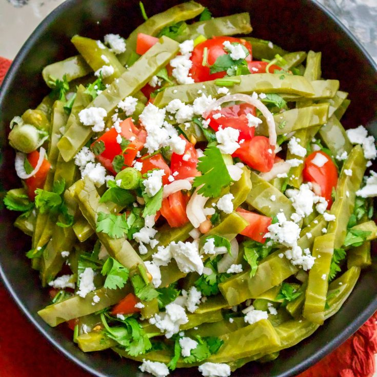

Lala's Authentic Nopales Salad

Straight from the heart of Mexico, here is Lala's Authentic Nopales Salad!
Not only is this dish delicious, but it is vegitarian and full of rich
nutrients. This dish pairs well as a side for most classic Mexican entrées.
Ingredients
- 2 Cactus Leaves
- 3 Roma Tomatoes
- 2 Green Onions
- 2 Stems of Cilantro
- Salt
- 1 Lemon
- Vegetable Oil
- Crumbled Queso Cotija
Steps
- Chop the cactus leaves into pieces. Cook the cactus leaves by boiling
them in a pot of water for 10 minutes. Rince well under running water,
drain, and pat dry. Another perfered way is to grill the cactus leaves.
Make slits with a knife down the leaves and place them on a lightly oiled
rack. Grill on each side for 4 minutes or untill they turn lighter in color
with the edges browning.
- Chop the tomatoes, green onions, and cilantro and mix together with the
cooked cactus. Add salt to taste, squeeze lemon juice over the salad, and
add a little bit of vegatable oil.
- Sprinkle the queso cotija over the salad and serve on its own or along side
meats, Mexican beans, or tacos.
Back to Top
Back to Odins Recipes